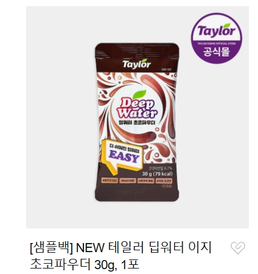
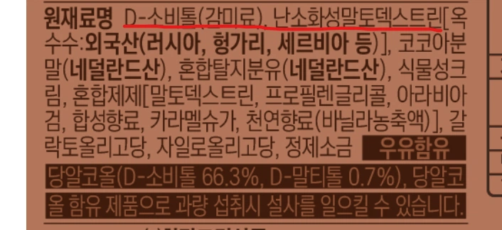

우유 같은데 타 먹는 제티 같은 놈이 하나 나왔는데

성분이 너무 무시무시하다...
이 회사는 진심이다

우유 같은데 타 먹는 제티 같은 놈이 하나 나왔는데

성분이 너무 무시무시하다...
이 회사는 진심이다
그래도 코코아가 더 많이 들어있어야할 거 같은데 ㅋㅋㅋㅋ
딥워터는 위험하다
센죠이같은 효과를 내서 딥워터인가
난소화성말토덱스트린은 설사 나오고 그런거 아님 보통 제로음료에 많이 들어가고 식이섬유음료에도 많이 들어감
근디 물을 빨아들이면 결국 설사를 하게 되어있엉
아!!!자!!!자!!!잣!!!!!!!!!
시험보는날 아침에 쾌변하고 갈려면 먹으면 좋겠네
뒤늦게 시험장에서 아자자잣!
시험장에서 꾸륵거릴 확률99퍼
'언제부터 쾌변을 한번만 할거라고 생각한거지?'
언제부터 아침에만 쾌변할거라고 생각했지?
최근에 마운자로 맞고 변 딱딱해 져서 치열 생겼는데 난소화성말토덱스트린 사서 아침 저녁 각4g 씩 타먹으니까 변 존나 부드럽게 나와가지고 치열 사라짐 개꿀임
고맙다
변비인 사람들이 먹는거임?
아니 그냥 멋모르고 먹었다가 고통받는거 즐기는 용도로 만든거임
변비라고 계속 저런거 먹어서 해결하려고하면 장내미생물 밸런스 개씹창나서 정상화될때까지 항생제 무한트라이하는 지옥에 빠질 수 있음
아자자자자잣!!!
꾸룩꾸룩은 ㅋㅋㅋㅋㅋㅋㅋ
난 푸룬주스 먹어도 반응없어서 변비약먹었는데 효과직빵이던데 사바사인듯
푸루룬 푸룬~ 상쾌하게~
조심해라.. 분명 방구였는데..
**난소화성말토텍스트린(Indigestible Maltodextrin)**은 옥수수 등의 녹말을 효소 처리하여 인체 소화 효소로 잘 분해되지 않도록 만든 수용성 식이섬유입니다. 소화·흡수가 되지 않고 장까지 내려가는 특성 덕분에 다양한 건강기능식품 원료로 활용됩니다.
주요 기능 및 효능
식후 혈당 상승 억제: 탄수화물이 포도당으로 급격히 흡수되는 속도를 늦춰 식후 혈당이 급증하는 것을 완화합니다.
혈중 중성지방 개선: 식사 후 지질 흡수를 방해하고 배설을 도와 혈중 중성지방 관리에 도움을 줍니다.
배변활동 원활: 장내 수분을 흡수해 변의 부피를 늘리고 장 운동을 촉진합니
말하다가 화장실 갔나보네
젖또 웃기멬ㅋㅋㅋㅋ
ㅋㅋㅋㄲㅋㄲㅋㅋㄲ
난소화성 말토덱스트린은 오히려 물변에 좋지않나?
식이섬유라 변비개선에도 좋고
처음 먹었을때 5분동안 이생각했다 그럼 그렇
저거 운전하면서 졸릴때 마시는거 아니었음?
잠이 존나깨긴할듯..!
ㅋㅋㅋㅋㅋ
어떤날은 먹어도 효과없음 ㅋㅋ
저런거먹고 설사 잘못하면 차루걸림
아❗자❗자❗잣‼️
말토덱 가루 큰봉다리 쌈
그냥 스푼으로 타서 먹는데 좋은 거임
아자자자자자잦